Analyste de performance — Data · Vidéo · Scouting
J'analyse le jeu par la vidéo et par la data, pour préparer les adversaires, évaluer les joueurs et livrer au staff des rapports clairs.
Travaux
Outil principal
ScoutAnalytics réunit dans un seul outil les données des équipes et des joueurs, sur un ou plusieurs championnats. Côté équipes : style de jeu, performance collective, comparaison entre adversaires. Côté joueurs : classements par poste, radars de comparaison, recherche par profil. Et les deux sont liés : chaque joueur est évalué dans le contexte tactique de son équipe.
Données de match
Wyscout
ScoutAnalytics
Pipeline Python · Scoring contextuel · Dashboard
Analyse d'équipe · Analyse de joueur · Rapports & vidéos
Version complète présentée en entretien.
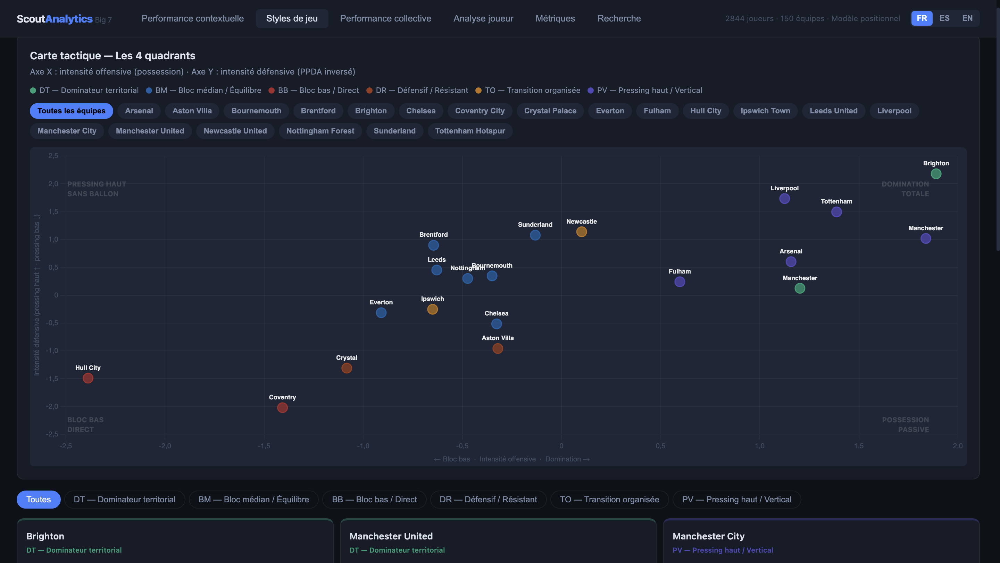
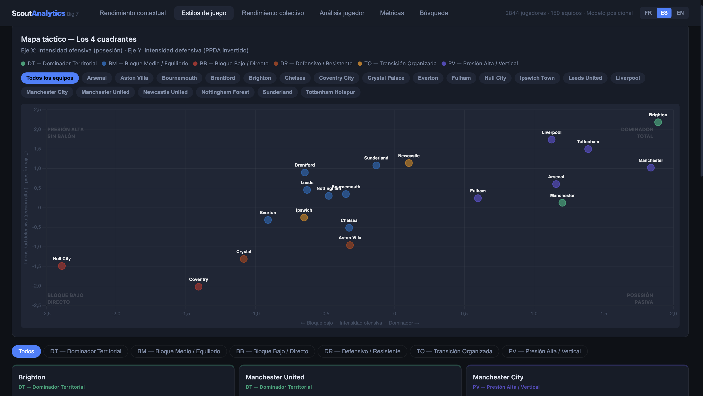
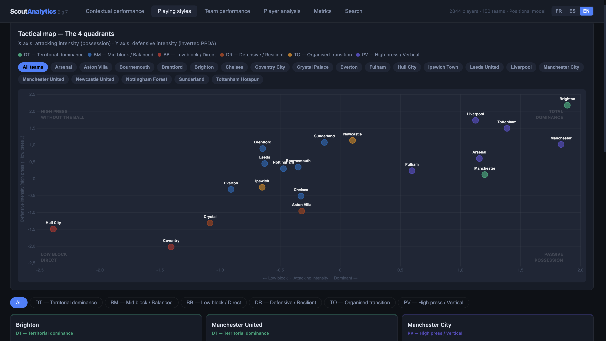
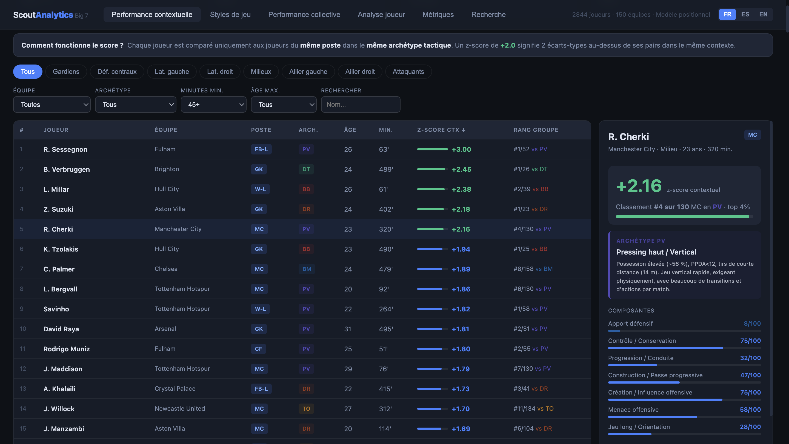
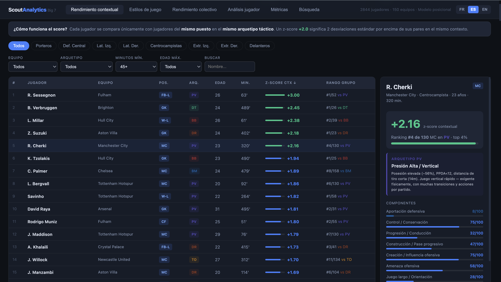
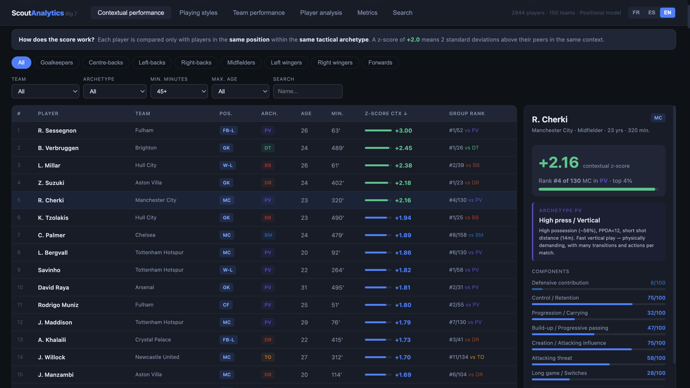
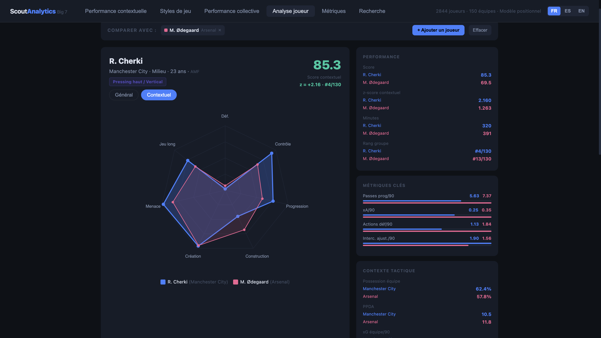
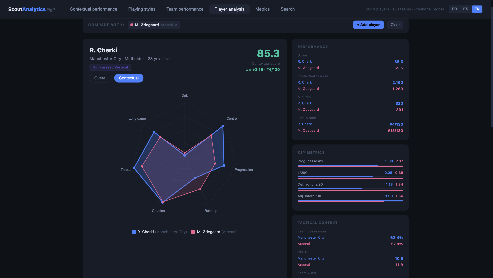
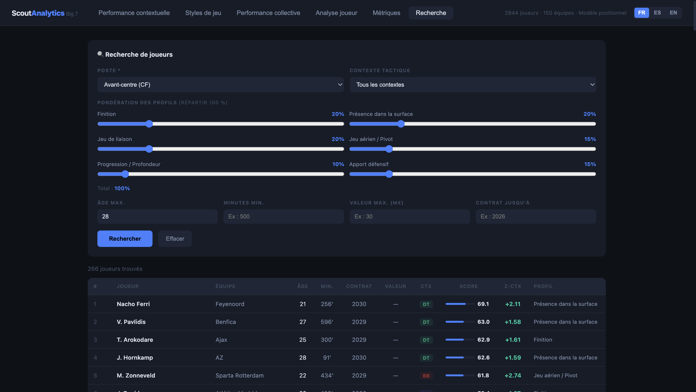
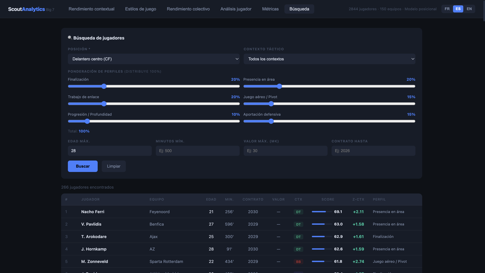
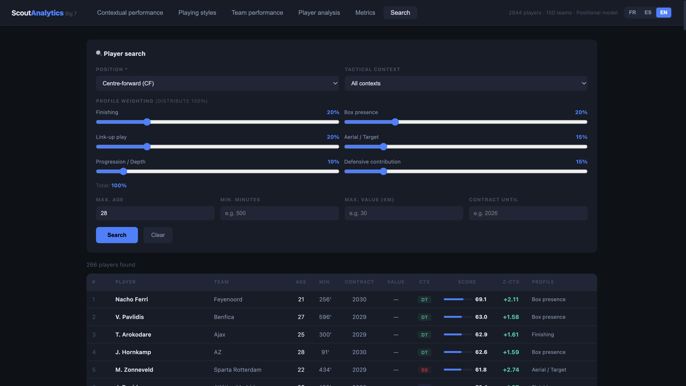
1. Classer les équipes par style de jeu. Chaque équipe est rattachée à un profil tactique à partir de ses données collectives. Les groupes sont calculés à partir des données elles-mêmes, et s'adaptent donc à n'importe quel championnat.
2. Comparer chaque joueur à ses vrais pairs. Un joueur est comparé aux joueurs de son poste, en tenant compte du style de jeu de son équipe. Ses statistiques sont ramenées aux mêmes échelles (par 90 minutes, puis en écart à la moyenne) pour que la comparaison soit juste.
3. Construire des scores lisibles. Les indicateurs sont regroupés en composantes notées de 0 à 100 par poste, avec un plafonnement des valeurs extrêmes pour éviter qu'un seul match exceptionnel fausse tout.
4. Chercher selon le besoin du club. La recherche avancée permet de pondérer ces composantes pour trouver le profil voulu, et le radar compare jusqu'à trois joueurs côte à côte.
Dernière mise à jour : septembre 2026
Profil
Je travaille sur les deux faces de l'analyse : ce qu'on voit à la vidéo et ce que mesurent les données. Je découpe les matchs, j'exploite les données de match et j'en tire des rapports adverses, des profils de joueurs et des outils que le staff peut utiliser directement.
Formé en sciences du sport (Licence STAPS, Université de Rouen) puis en data (Master Big Data Deportivo, Sports Data Campus, UCAM).
Basé entre Le Havre et Cadix. Ouvert à la mobilité internationale.
Français natif · Espagnol courant · Anglais intermédiaire.
Analyse vidéo
Données football
Analyse de données
Visualisation & outils
Contact
Disponibilité immédiate pour un poste en analyse de performance, scouting, analyse vidéo ou analyse de données.